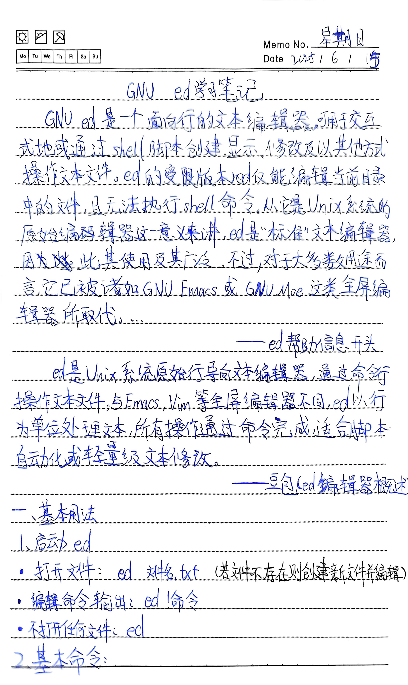
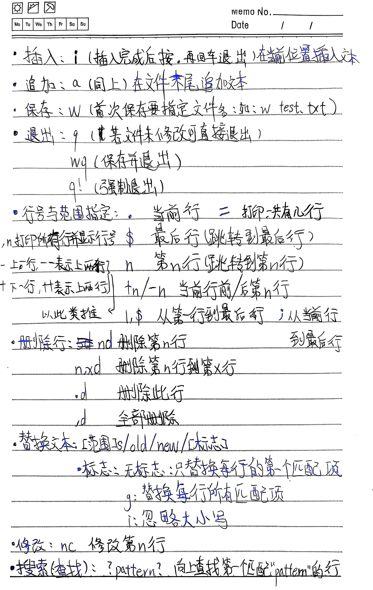
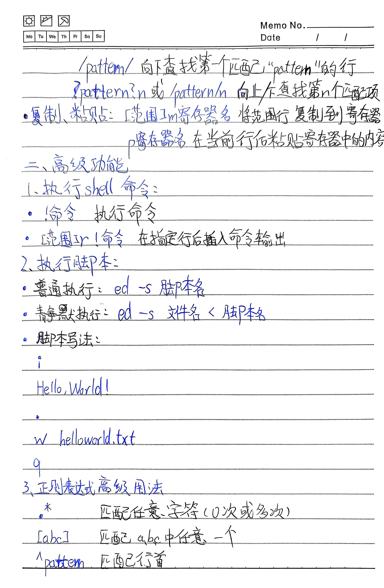
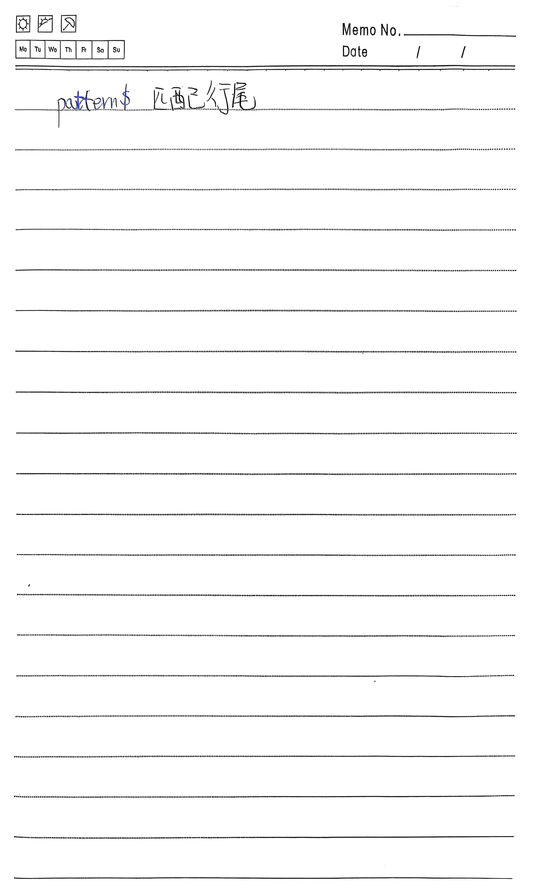

一、基本用法
1、启动 ed
- 打开文件：
ed 文件名.txt（若文件不存在则创建新文件并编辑） - 编辑命令输出：
ed !命令 - 不打开任何文件：
ed
2、基本命令
i- 插入：在当前位置插入文本。插入完成后输入
.并回车退出插入模式。 a- 追加：在文件末尾追加文本（用法同
i）。 w- 保存：首次保存需指定文件名，例如：
w test.txt。 q- 退出：若文件未修改可直接退出。
wq- 保存并退出。
q!- 强制退出，不保存更改。
行号与范围指定
=：打印总行数。$：最后一行（跳转到最后一行）。n：跳转到第 n 行。+n/-n：当前行前/后第 n 行。- 示例：
1,$表示从第一行到最后一行；.,$表示从当前行到末尾。
删除行
nd：删除第 n 行。n,xd：删除第 n 行到第 x 行。.d：删除当前行。,d：删除全部行。
替换文本
语法：[范围]s/old/new/[标志]
- 无标志：仅替换每行第一个匹配项。
g：替换每行所有匹配项。i：忽略大小写。
示例：1,$s/foo/bar/g —— 全文替换所有 "foo" 为 "bar"。
修改行
nc：修改第 n 行（输入新内容，以.结束）。
搜索（查找）
?pattern?：向上查找第一个匹配 "pattern" 的行。/pattern/：向下查找第一个匹配 "pattern" 的行。?pattern?n或/pattern/n：向上/下查找第 n 个匹配项。
复制与粘贴
[范围]n寄存器名：将指定行复制到寄存器（如1,5mk把第1-5行复制到寄存器 k）。p寄存器名：在当前行后粘贴寄存器中的内容（如pk）。
二、高级功能
1、执行 shell 命令
!命令：在 ed 中执行 shell 命令。[范围]!命令：在指定行后插入命令输出结果。
2、执行 ed 脚本
- 普通执行：
ed -s 脚本名 - 静默执行：
ed -s 文件名 < 脚本名
示例脚本内容：
i
Hello, World!
.
w helloworld.txt
q3、正则表达式高级用法
*：匹配任意字符 0 次或多次。[abc]：匹配 a、b、c 中任意一个字符。^pattern：匹配以 pattern 开头的行。pattern$：匹配以 pattern 结尾的行。
手写笔记(扫描全能王 扫描)
   